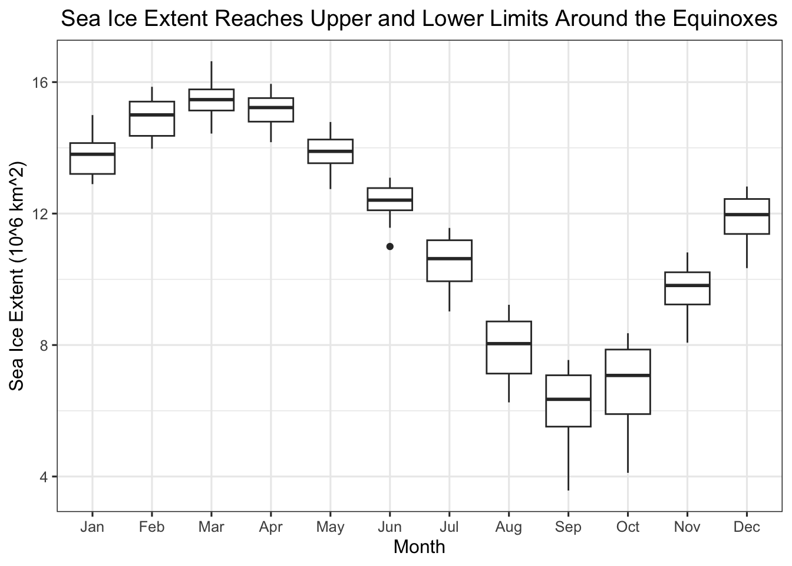
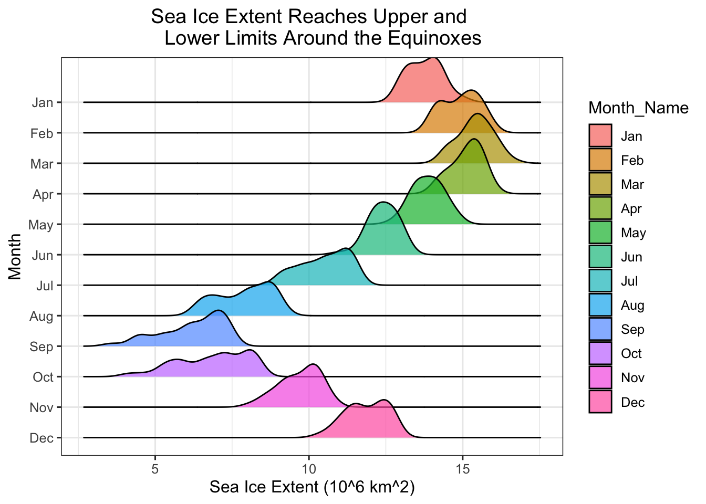
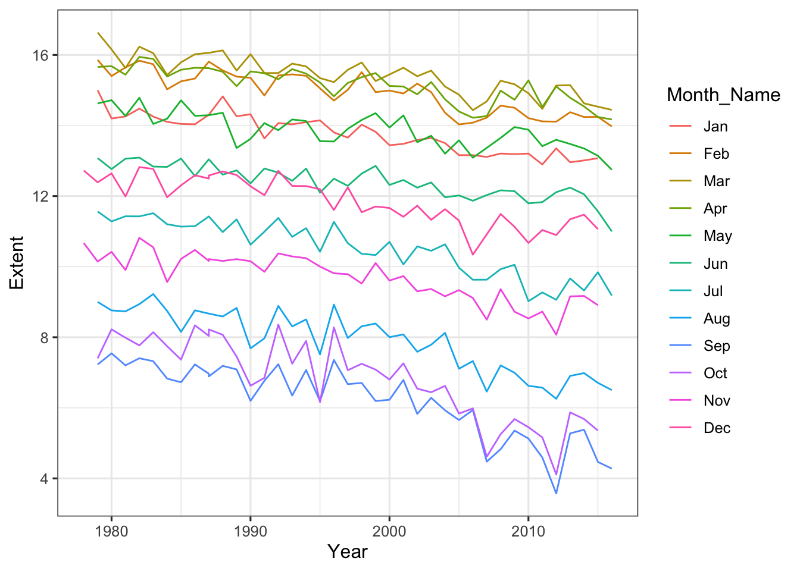
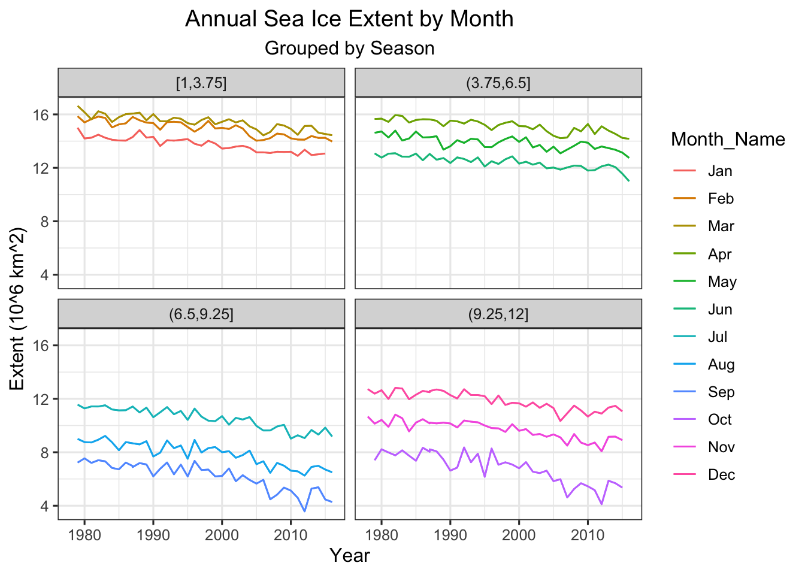
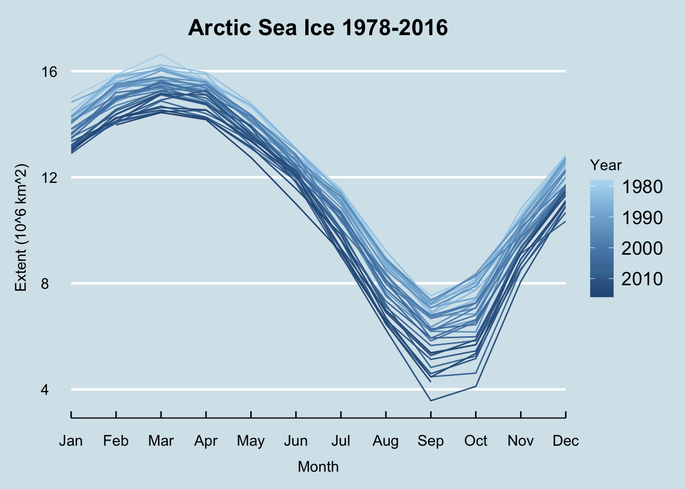

── Column specification ────────────────────────────────────────────────────────
Delimiter: ","
chr (1): Month_Name
dbl (5): Year, Month, Day, Extent, Missing
ℹ Use `spec()` to retrieve the full column specification for this data.
ℹ Specify the column types or set `show_col_types = FALSE` to quiet this message.
Show that it worked by showing the basic properties of the data.
Year Month Day Extent Missing
Min. :1978 Min. : 1.000 Min. : 1.000 Min. : 3.573 Min. :0
1st Qu.:1988 1st Qu.: 4.000 1st Qu.: 1.000 1st Qu.: 8.845 1st Qu.:0
Median :1997 Median : 7.000 Median : 1.000 Median :12.239 Median :0
Mean :1997 Mean : 6.539 Mean : 1.148 Mean :11.529 Mean :0
3rd Qu.:2007 3rd Qu.:10.000 3rd Qu.: 1.000 3rd Qu.:14.274 3rd Qu.:0
Max. :2016 Max. :12.000 Max. :13.000 Max. :16.635 Max. :0
Month_Name
Sep : 39
Nov : 39
Dec : 39
Feb : 38
Mar : 38
Apr : 38
(Other):227
Note: Setting titles and subtitles to center by default
Make a boxplot showing the variability in sea ice extent every month. IYKYK make it fancy.
ggplot(data = ice,mapping =aes(x = Month_Name,y = Extent)) +geom_boxplot() +labs(x ="Month",y ="Sea Ice Extent (10^6 km^2)",title ="Sea Ice Extent Reaches Upper and Lower Limits Around the Equinoxes" )

3. Ridgelines
Use ggridges to do the same thing.
library(ggridges)ggplot(data = ice,mapping =aes(x = Extent,y =fct_rev(Month_Name), # put January at topfill = Month_Name)) +geom_density_ridges(alpha =0.7) +labs(x ="Sea Ice Extent (10^6 km^2)",y ="Month",title ="Sea Ice Extent Reaches Upper and Lower Limits Around the Equinoxes" )
Picking joint bandwidth of 0.297

What do you learn that is different than the boxplot?
The ridgeline plot provides a better sense of the distribution than the boxplot. However, the boxplot includes the median by default, a useful summary statistic.
With the original data, plot sea ice by year, with different lines (oh! What geom will you need for that?) for different months.
ice_plot <-ggplot(data = ice,mapping =aes(x = Year, y = Extent, group = Month_Name, color = Month_Name)) +geom_line()ice_plot

Then, use facet_wrap and cut_interval(Month, n=4) to split the plot into seasons.
seasonal_ice_plot <- ice_plot +geom_line() +facet_wrap(~cut_interval(Month, n=4)) +labs(title ="Annual Sea Ice Extent by Month",subtitle ="Grouped by Season",y ="Extent (10^6 km^2)")seasonal_ice_plot

5. Use That Color!
Last, make a line plot of sea ice by month with different lines as different years. Gussy it up with colors by year, a different theme, critical values, and whatever other annotations, changes to axes, etc., you think best show the story of this data. For ideas, see the lab, and look at various palettes around. Extra credit for using colorfindr to make a palette.
library(ggthemes) # for economist themelibrary(paletteer) # for color palletteannual_ice_plot <-ggplot(data = ice,mapping =aes(x = Month_Name,y = Extent,group = Year,color = Year)) +geom_line() +labs(title ="Arctic Sea Ice 1978-2016",x ="Month",y ="Extent (10^6 km^2)") +guides(color =guide_colorbar(reverse =TRUE)) +theme_economist() +theme(plot.title =element_text(hjust=0.5),axis.title.y =element_text(margin =margin(r =10)), # margin space for axis labelsaxis.title.x =element_text(margin =margin(t =10)),legend.position ="right") +scale_color_paletteer_c("ggthemes::Blue") +scale_x_discrete(expand =c(0,0)) # got rid of padding in x axis.annual_ice_plot

I chose the ggthemes::Blue, which I found via r-charts.com, because it created a gradient from near white to darker blue. I feel this visually communicates the melting of ice.
I also looked up how to reverse the direction of the colorbar in the legend, so that it aligned with the gradient seen in the data.
Impress Yourself with Knowledge You Conquered 1. gganimate
We are now generating figures and imagery. It’s something that blends creativity, abstract thinking, and quantiative abilities. How confident were you in thinking about making figures before this week versus after grappling with ggplot and the grammar of graphics philosophy?
Prior to this past week I was not confident at all, and was a bit intimidated that we were jumping immediately into making figures (although also excited). After this past week, I can clearly see how accessible it can be to make exploritory graphs, but I’ll admit that getting a graph to be exactly how you want it in its final version is still quite daunting and I am not so confident. I found with the homework that 90% of my time was spent trying to learn how to tweat my graph in to look how I wanted it to look.
Meta 2.
What’s your favorite think about data visualization?
Just being able to explore data visually and see trends and patterns.
Meta 3.
How much time did this take you, roughly? I’m trying to keep track that these assignments aren’t killer, more than anything.
Honestly? I spent like 5+ hours on this. But a lot of it was just tweaking and messing around and exploring. I imagine I could have completed the basics of the assignment in under 2 hours, but I wouldn’t have learned as much.
Meta 4.
Please give yourself a weak/sufficient/strong assessment on this assigment. Feel free to comment on why.
Strong. I realize I didn’t complete all the extra credit pieces, but I believe I was thorough with the main goals of the assignment, and did go a bit beyond by investigating display customization and exploring the animation.